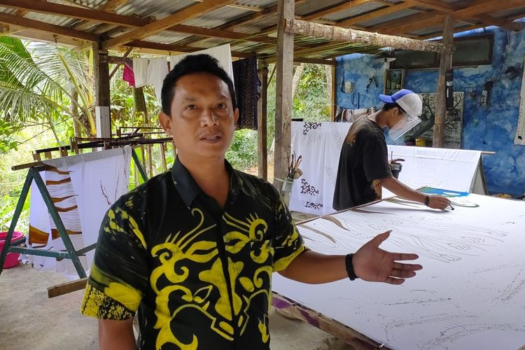

Tentang Ekstrakurikuler SSRT
Sejarah Singkat
SSRT (Sanggar Seni Rupa Trimatra) didirikan pada tahun 2009 dengan tujuan menjadi wadah bagi siswa-siswi yang memiliki minat dan bakat di bidang seni visual.
Visi
Menjadi pusat pengembangan seni rupa sekolah yang melahirkan seniman muda berkarakter, kreatif, dan berprestasi di kancah nasional dan internasional.
Misi & Tujuan
- Mengembangkan kemampuan teknis dan estetika siswa dalam berbagai media seni rupa.
- Menyelenggarakan pameran rutin dan workshop intensif.
- Mendukung penuh partisipasi siswa dalam kompetisi seni rupa.
Tim Pembimbing & Kontak

Bapak Anton Subroto, S.Sn.
Guru Pembimbing Utama
anton.seni@sekolah.sch.id
Admin SSRT (Ketua Ekskul)
Hubungi untuk Pendaftaran dan Informasi Umum
081934183194 (Wulan Maulani - Admin)
@SSRT_Official
Struktur Anggota Inti
SSRT dibagi menjadi beberapa divisi kreatif untuk memaksimalkan fokus pembelajaran dan proyek.
Divisi Sketsa & Lukis
25 Anggota Aktif
Divisi Seni Digital
18 Anggota Aktif
Divisi 3D & Patung
12 Anggota Aktif